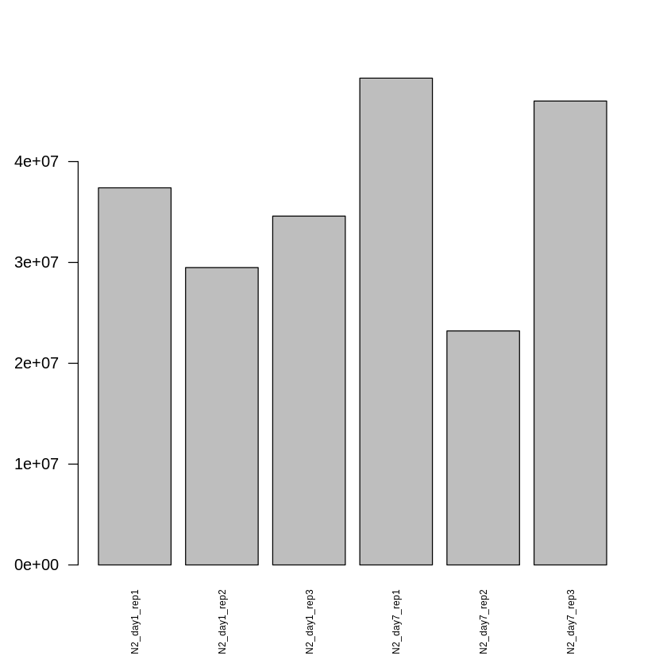
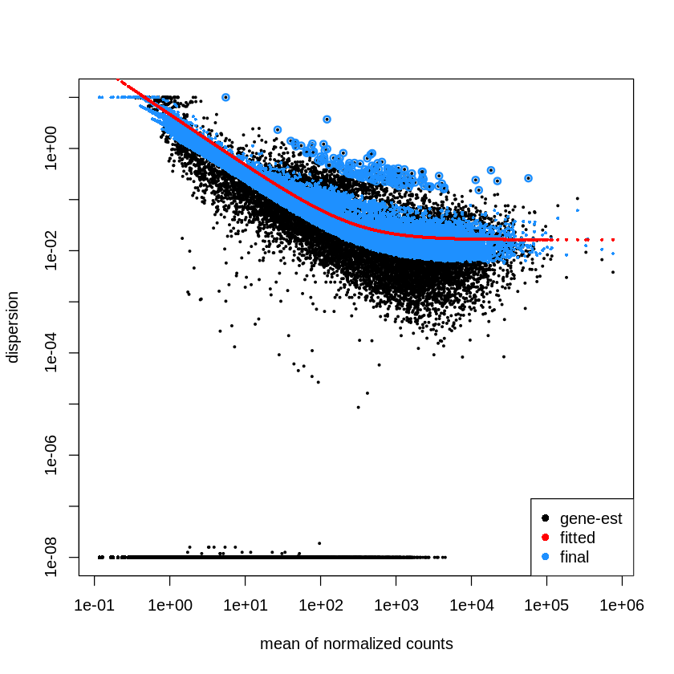
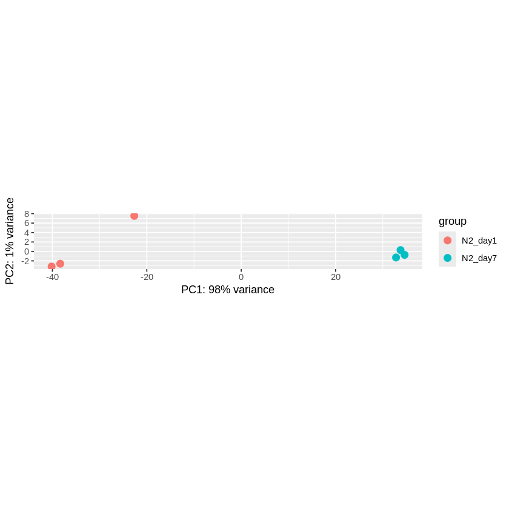
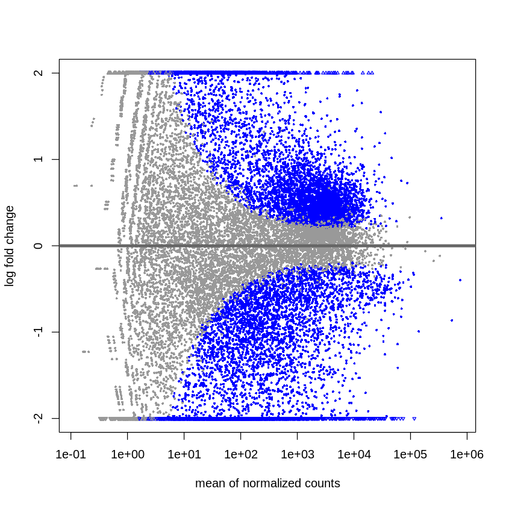
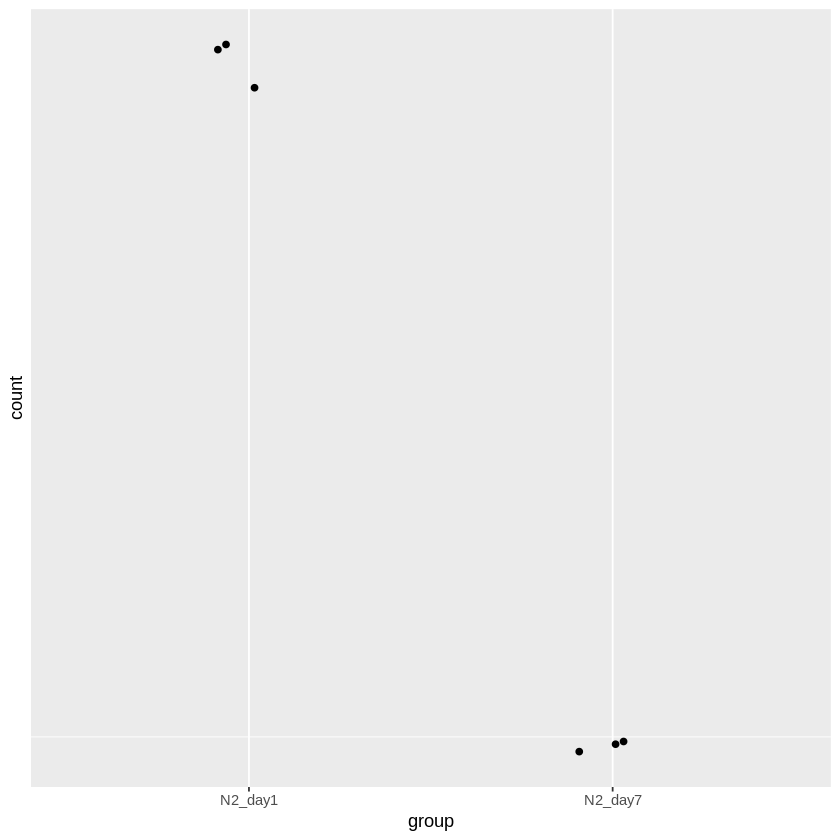
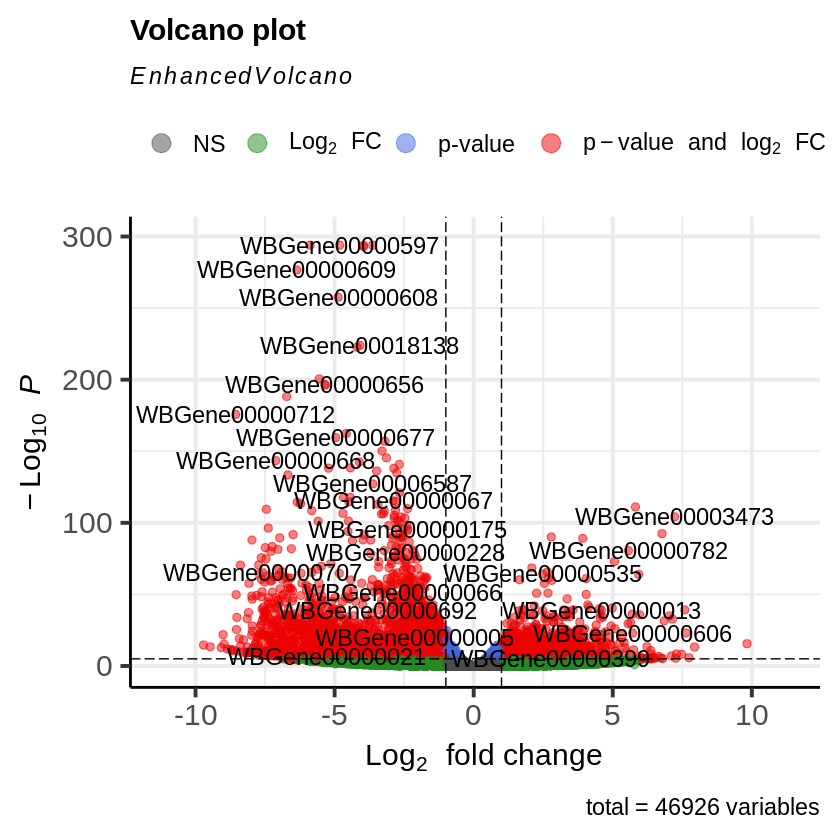
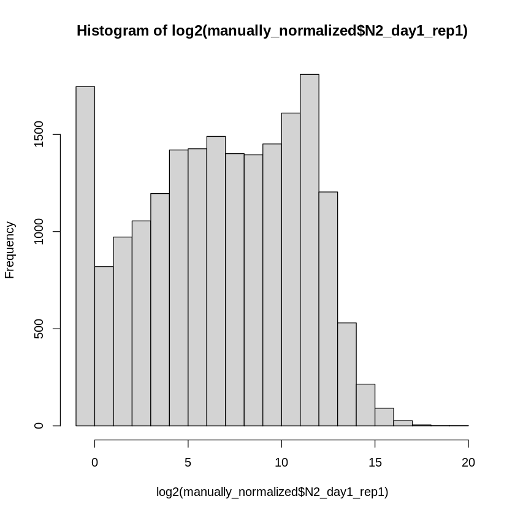

Analysis of RNA-seq data using R
Instsall required R packages
if (!require("BiocManager", quietly = TRUE))
install.packages("BiocManager")
BiocManager::install("DESeq2")
BiocManager::install("EnhancedVolcano")
Installing package into ‘/usr/local/lib/R/site-library’
(as ‘lib’ is unspecified)
'getOption("repos")' replaces Bioconductor standard repositories, see
'help("repositories", package = "BiocManager")' for details.
Replacement repositories:
CRAN: https://cran.rstudio.com
Bioconductor version 3.19 (BiocManager 1.30.25), R 4.4.1 (2024-06-14)
Installing package(s) 'BiocVersion', 'DESeq2'
also installing the dependencies ‘formatR’, ‘UCSC.utils’, ‘GenomeInfoDbData’, ‘zlibbioc’, ‘abind’, ‘SparseArray’, ‘lambda.r’, ‘futile.options’, ‘GenomeInfoDb’, ‘XVector’, ‘S4Arrays’, ‘DelayedArray’, ‘futile.logger’, ‘snow’, ‘BH’, ‘S4Vectors’, ‘IRanges’, ‘GenomicRanges’, ‘SummarizedExperiment’, ‘BiocGenerics’, ‘Biobase’, ‘BiocParallel’, ‘matrixStats’, ‘locfit’, ‘MatrixGenerics’, ‘RcppArmadillo’
Old packages: 'Matrix'
'getOption("repos")' replaces Bioconductor standard repositories, see
'help("repositories", package = "BiocManager")' for details.
Replacement repositories:
CRAN: https://cran.rstudio.com
Bioconductor version 3.19 (BiocManager 1.30.25), R 4.4.1 (2024-06-14)
Installing package(s) 'EnhancedVolcano'
also installing the dependency ‘ggrepel’
Old packages: 'Matrix'
Load R packages
library(DESeq2)
library(dplyr)
library(EnhancedVolcano)
Loading required package: S4Vectors
Loading required package: stats4
Loading required package: BiocGenerics
Attaching package: ‘BiocGenerics’
The following objects are masked from ‘package:stats’:
IQR, mad, sd, var, xtabs
The following objects are masked from ‘package:base’:
anyDuplicated, aperm, append, as.data.frame, basename, cbind,
colnames, dirname, do.call, duplicated, eval, evalq, Filter, Find,
get, grep, grepl, intersect, is.unsorted, lapply, Map, mapply,
match, mget, order, paste, pmax, pmax.int, pmin, pmin.int,
Position, rank, rbind, Reduce, rownames, sapply, setdiff, table,
tapply, union, unique, unsplit, which.max, which.min
Attaching package: ‘S4Vectors’
The following object is masked from ‘package:utils’:
findMatches
The following objects are masked from ‘package:base’:
expand.grid, I, unname
Loading required package: IRanges
Loading required package: GenomicRanges
Loading required package: GenomeInfoDb
Loading required package: SummarizedExperiment
Loading required package: MatrixGenerics
Loading required package: matrixStats
Attaching package: ‘MatrixGenerics’
The following objects are masked from ‘package:matrixStats’:
colAlls, colAnyNAs, colAnys, colAvgsPerRowSet, colCollapse,
colCounts, colCummaxs, colCummins, colCumprods, colCumsums,
colDiffs, colIQRDiffs, colIQRs, colLogSumExps, colMadDiffs,
colMads, colMaxs, colMeans2, colMedians, colMins, colOrderStats,
colProds, colQuantiles, colRanges, colRanks, colSdDiffs, colSds,
colSums2, colTabulates, colVarDiffs, colVars, colWeightedMads,
colWeightedMeans, colWeightedMedians, colWeightedSds,
colWeightedVars, rowAlls, rowAnyNAs, rowAnys, rowAvgsPerColSet,
rowCollapse, rowCounts, rowCummaxs, rowCummins, rowCumprods,
rowCumsums, rowDiffs, rowIQRDiffs, rowIQRs, rowLogSumExps,
rowMadDiffs, rowMads, rowMaxs, rowMeans2, rowMedians, rowMins,
rowOrderStats, rowProds, rowQuantiles, rowRanges, rowRanks,
rowSdDiffs, rowSds, rowSums2, rowTabulates, rowVarDiffs, rowVars,
rowWeightedMads, rowWeightedMeans, rowWeightedMedians,
rowWeightedSds, rowWeightedVars
Loading required package: Biobase
Welcome to Bioconductor
Vignettes contain introductory material; view with
'browseVignettes()'. To cite Bioconductor, see
'citation("Biobase")', and for packages 'citation("pkgname")'.
Attaching package: ‘Biobase’
The following object is masked from ‘package:MatrixGenerics’:
rowMedians
The following objects are masked from ‘package:matrixStats’:
anyMissing, rowMedians
Attaching package: ‘dplyr’
The following object is masked from ‘package:Biobase’:
combine
The following object is masked from ‘package:matrixStats’:
count
The following objects are masked from ‘package:GenomicRanges’:
intersect, setdiff, union
The following object is masked from ‘package:GenomeInfoDb’:
intersect
The following objects are masked from ‘package:IRanges’:
collapse, desc, intersect, setdiff, slice, union
The following objects are masked from ‘package:S4Vectors’:
first, intersect, rename, setdiff, setequal, union
The following objects are masked from ‘package:BiocGenerics’:
combine, intersect, setdiff, union
The following objects are masked from ‘package:stats’:
filter, lag
The following objects are masked from ‘package:base’:
intersect, setdiff, setequal, union
Loading required package: ggplot2
Loading required package: ggrepel
Navigation in the file system and read the count files
getwd()
'/content'
list.files()
- 'N2_day1_rep1.ReadsPerGene.out.tab'
- 'N2_day1_rep2.ReadsPerGene.out.tab'
- 'N2_day1_rep3.ReadsPerGene.out.tab'
- 'N2_day7_rep1.ReadsPerGene.out.tab'
- 'N2_day7_rep2.ReadsPerGene.out.tab'
- 'N2_day7_rep3.ReadsPerGene.out.tab'
- 'sample_data'
file_paths <- list.files(pattern = "*.ReadsPerGene.out.tab")
file_paths
- 'N2_day1_rep1.ReadsPerGene.out.tab'
- 'N2_day1_rep2.ReadsPerGene.out.tab'
- 'N2_day1_rep3.ReadsPerGene.out.tab'
- 'N2_day7_rep1.ReadsPerGene.out.tab'
- 'N2_day7_rep2.ReadsPerGene.out.tab'
- 'N2_day7_rep3.ReadsPerGene.out.tab'
# Function to read the STAR ReadsPerGene.out.tab file
read_star_file <- function(file_path) {
# Read the file
df <- read.table(file_path, header = FALSE, stringsAsFactors = FALSE)
# Keep only the first (gene) and second (unstranded counts) columns
df <- df %>% select(V1, V2)
# Rename the columns for clarity (GeneID and counts for this sample)
colnames(df) <- c("GeneID", gsub(".ReadsPerGene.out.tab", "", basename(file_path)))
return(df)
}
# Read all files into a list of data frames
list_of_dfs <- lapply(file_paths, read_star_file)
# Merge all data frames by the GeneID column
merged_df <- Reduce(function(x, y) merge(x, y, by = "GeneID"), list_of_dfs)
merged_df <- merged_df[-c(1:4), ]
# Check the first few rows of the combined data frame
head(merged_df)
# Optionally, write the combined data frame to a CSV file
write.csv(merged_df, "combined_gene_counts.csv", row.names = FALSE)
| GeneID | N2_day1_rep1 | N2_day1_rep2 | N2_day1_rep3 | N2_day7_rep1 | N2_day7_rep2 | N2_day7_rep3 | |
|---|---|---|---|---|---|---|---|
| <chr> | <int> | <int> | <int> | <int> | <int> | <int> | |
| 5 | WBGene00000001 | 3227 | 2168 | 2589 | 5659 | 2619 | 5239 |
| 6 | WBGene00000002 | 270 | 203 | 266 | 355 | 191 | 425 |
| 7 | WBGene00000003 | 341 | 415 | 411 | 387 | 255 | 499 |
| 8 | WBGene00000004 | 584 | 438 | 518 | 1028 | 541 | 888 |
| 9 | WBGene00000005 | 383 | 395 | 483 | 119 | 65 | 189 |
| 10 | WBGene00000006 | 343 | 344 | 334 | 206 | 114 | 220 |
class(list_of_dfs)
'list'
head(list_of_dfs[[2]])
| GeneID | N2_day1_rep2 | |
|---|---|---|
| <chr> | <int> | |
| 1 | N_unmapped | 1400596 |
| 2 | N_multimapping | 1305129 |
| 3 | N_noFeature | 152183 |
| 4 | N_ambiguous | 439830 |
| 5 | WBGene00000003 | 415 |
| 6 | WBGene00000007 | 513 |
rownames(merged_df) = merged_df$GeneID
head(merged_df)
| GeneID | N2_day1_rep1 | N2_day1_rep2 | N2_day1_rep3 | N2_day7_rep1 | N2_day7_rep2 | N2_day7_rep3 | |
|---|---|---|---|---|---|---|---|
| <chr> | <int> | <int> | <int> | <int> | <int> | <int> | |
| WBGene00000001 | WBGene00000001 | 3227 | 2168 | 2589 | 5659 | 2619 | 5239 |
| WBGene00000002 | WBGene00000002 | 270 | 203 | 266 | 355 | 191 | 425 |
| WBGene00000003 | WBGene00000003 | 341 | 415 | 411 | 387 | 255 | 499 |
| WBGene00000004 | WBGene00000004 | 584 | 438 | 518 | 1028 | 541 | 888 |
| WBGene00000005 | WBGene00000005 | 383 | 395 | 483 | 119 | 65 | 189 |
| WBGene00000006 | WBGene00000006 | 343 | 344 | 334 | 206 | 114 | 220 |
# NULL reserved word representing empty
merged_df$GeneID = NULL
head(merged_df)
| N2_day1_rep1 | N2_day1_rep2 | N2_day1_rep3 | N2_day7_rep1 | N2_day7_rep2 | N2_day7_rep3 | |
|---|---|---|---|---|---|---|
| <int> | <int> | <int> | <int> | <int> | <int> | |
| WBGene00000001 | 3227 | 2168 | 2589 | 5659 | 2619 | 5239 |
| WBGene00000002 | 270 | 203 | 266 | 355 | 191 | 425 |
| WBGene00000003 | 341 | 415 | 411 | 387 | 255 | 499 |
| WBGene00000004 | 584 | 438 | 518 | 1028 | 541 | 888 |
| WBGene00000005 | 383 | 395 | 483 | 119 | 65 | 189 |
| WBGene00000006 | 343 | 344 | 334 | 206 | 114 | 220 |
subset_df4test <- merged_df[, c("N2_day1_rep1", "N2_day1_rep2", "N2_day1_rep3")]
head(subset_df4test)
| N2_day1_rep1 | N2_day1_rep2 | N2_day1_rep3 | |
|---|---|---|---|
| <int> | <int> | <int> | |
| WBGene00000001 | 3227 | 2168 | 2589 |
| WBGene00000002 | 270 | 203 | 266 |
| WBGene00000003 | 341 | 415 | 411 |
| WBGene00000004 | 584 | 438 | 518 |
| WBGene00000005 | 383 | 395 | 483 |
| WBGene00000006 | 343 | 344 | 334 |
Check count matrix
Different samples have different total number of counts
as.data.frame(colSums(merged_df))
| colSums(merged_df) | |
|---|---|
| <dbl> | |
| N2_day1_rep1 | 37398898 |
| N2_day1_rep2 | 29488709 |
| N2_day1_rep3 | 34593136 |
| N2_day7_rep1 | 48275683 |
| N2_day7_rep2 | 23204449 |
| N2_day7_rep3 | 46005617 |
barplot(colSums(merged_df),
las = 2,
cex.names= 0.6)

# inkscape: an open source software for editing the graph saved in pdf
pdf("total_count_barplot.pdf")
barplot(colSums(merged_df),
las = 2,
cex.names= 0.6)
dev.off()
pdf: 2
coldata <- colnames(merged_df)
coldata_df <- cbind(group = gsub("_rep\\d", "", coldata))
coldata_df
| group |
|---|
| N2_day1 |
| N2_day1 |
| N2_day1 |
| N2_day7 |
| N2_day7 |
| N2_day7 |
rownames(coldata_df) = coldata
coldata_df
| group | |
|---|---|
| N2_day1_rep1 | N2_day1 |
| N2_day1_rep2 | N2_day1 |
| N2_day1_rep3 | N2_day1 |
| N2_day7_rep1 | N2_day7 |
| N2_day7_rep2 | N2_day7 |
| N2_day7_rep3 | N2_day7 |
Run DESeq2 to identify DEG
dds <- DESeqDataSetFromMatrix(countData = merged_df,
colData = coldata_df,
design =~ group)
Warning message in DESeqDataSet(se, design = design, ignoreRank):
“some variables in design formula are characters, converting to factors”
class(dds)
'DESeqDataSet'
The DESeq() function normalizes the read counts,estimates dispersions, and fits the linear model, all in one go.
dds <- DESeq(dds)
estimating size factors
estimating dispersions
gene-wise dispersion estimates
mean-dispersion relationship
final dispersion estimates
fitting model and testing
Dispersion is a measure of spread or variability in the data. Variance, standard deviation, IQR, among other measures, can all be used to measure dispersion.
DESeq2 uses a specific measure of dispersion (α) related to the mean (μ) and variance of the data: Var = μ + α*μ^2.
sizeFactors(dds)
- N2_day1_rep1
- 1.00236113145741
- N2_day1_rep2
- 0.810736816029527
- N2_day1_rep3
- 0.944781672438598
- N2_day7_rep1
- 1.31189917666838
- N2_day7_rep2
- 0.71546097217711
- N2_day7_rep3
- 1.42600915363567
head(counts(dds, normalized = TRUE))
| N2_day1_rep1 | N2_day1_rep2 | N2_day1_rep3 | N2_day7_rep1 | N2_day7_rep2 | N2_day7_rep3 | |
|---|---|---|---|---|---|---|
| WBGene00000001 | 3219.3986 | 2674.1107 | 2740.3156 | 4313.59368 | 3660.57703 | 3673.8895 |
| WBGene00000002 | 269.3640 | 250.3895 | 281.5465 | 270.60006 | 266.96075 | 298.0346 |
| WBGene00000003 | 340.1968 | 511.8800 | 435.0211 | 294.99218 | 356.41357 | 349.9276 |
| WBGene00000004 | 582.6243 | 540.2493 | 548.2748 | 783.59680 | 756.15585 | 622.7169 |
| WBGene00000005 | 382.0978 | 487.2111 | 511.2292 | 90.70819 | 90.85052 | 132.5377 |
| WBGene00000006 | 342.1920 | 424.3054 | 353.5208 | 157.02426 | 159.33783 | 154.2767 |
The function plotDispEsts shows the dispersion by mean of normalized counts. We expect the dispersion to decrease as the mean of normalized counts increases.
The functions shows:
-
black per-gene dispersion estimates
-
a red trend line representing the global relationship between dispersion and normalized count
-
blue 'shrunken' values moderating individual dispersion estimates by the global relationship
-
blue-circled dispersion outliers with high gene-wise dispersion that were not adjusted.
plotDispEsts(dds)

Plot normalized genes
The function plotCounts is used to plot normalized counts plus a pseudocount of 0.5 by default.
vsd <- vst(dds, blind=FALSE)
?vst
class(vsd)
'DESeqTransform'
plotPCA(vsd, intgroup = c("group"))
using ntop=500 top features by variance

Extract DEG results using results function
res <- results(dds)
res
log2 fold change (MLE): group N2 day7 vs N2 day1
Wald test p-value: group N2 day7 vs N2 day1
DataFrame with 46926 rows and 6 columns
baseMean log2FoldChange lfcSE stat pvalue
<numeric> <numeric> <numeric> <numeric> <numeric>
WBGene00000001 3380.314 0.4320800 0.136502 3.165370 1.54886e-03
WBGene00000002 272.816 0.0620929 0.165747 0.374626 7.07939e-01
WBGene00000003 381.405 -0.3623262 0.199673 -1.814594 6.95864e-02
WBGene00000004 638.936 0.3698102 0.151232 2.445312 1.44727e-02
WBGene00000005 282.439 -2.1244976 0.227771 -9.327337 1.08564e-20
... ... ... ... ... ...
WBGene00306078 0.566369 0.947326 3.076775 0.307896 7.58162e-01
WBGene00306080 0.243919 1.429602 4.042905 0.353608 7.23633e-01
WBGene00306081 27.265033 -3.108820 0.627823 -4.951747 7.35501e-07
WBGene00306121 14.219195 -0.210100 0.691162 -0.303981 7.61142e-01
WBGene00306122 0.000000 NA NA NA NA
padj
<numeric>
WBGene00000001 4.06703e-03
WBGene00000002 7.84660e-01
WBGene00000003 1.17161e-01
WBGene00000004 2.96896e-02
WBGene00000005 1.92160e-19
... ...
WBGene00306078 NA
WBGene00306080 NA
WBGene00306081 3.70005e-06
WBGene00306121 8.26621e-01
WBGene00306122 NA
class(res)
'DESeqResults'
mcols(res)$description
- 'mean of normalized counts for all samples'
- 'log2 fold change (MLE): group N2 day7 vs N2 day1'
- 'standard error: group N2 day7 vs N2 day1'
- 'Wald statistic: group N2 day7 vs N2 day1'
- 'Wald test p-value: group N2 day7 vs N2 day1'
- 'BH adjusted p-values'
baseMean: mean of normalized counts for all sampleslog2FoldChange: log2 fold changelfcSE: standard errorstat: Wald statisticpvalue: Wald test p-valuepadj: BH adjusted p-values
If we used the p-value directly from the Wald test with a significance cut-off of p < 0.05, that means there is a 5% chance it is a false positives. Each p-value is the result of a single test (single gene). The more genes we test, the more we inflate the false positive rate. This is the multiple testing problem. For example, if we test 20,000 genes for differential expression, at p < 0.05 we would expect to find 1,000 genes by chance. If we found 3000 genes to be differentially expressed total, roughly one third of our genes are false positives. We would not want to sift through our “significant” genes to identify which ones are true positives.
DESeq2 helps reduce the number of genes tested by removing those genes unlikely to be significantly DE prior to testing, such as those with low number of counts and outlier samples (gene-level QC). However, we still need to correct for multiple testing to reduce the number of false positives, and there are a few common approaches:
-
Bonferroni: The adjusted p-value is calculated by: p-value * m (m = total number of tests). This is a very conservative approach with a high probability of false negatives, so is generally not recommended.
-
FDR/Benjamini-Hochberg: Benjamini and Hochberg (1995) defined the concept of FDR and created an algorithm to control the expected FDR below a specified level given a list of independent p-values. An interpretation of the BH method for controlling the FDR is implemented in DESeq2 in which we rank the genes by p-value, then multiply each ranked p-value by m/rank.
-
Q-value / Storey method: The minimum FDR that can be attained when calling that feature significant. For example, if gene X has a q-value of 0.013 it means that 1.3% of genes that show p-values at least as small as gene X are false positives In DESeq2, the p-values attained by the Wald test are corrected for multiple testing using the Benjamini and Hochberg method by default. There are options to use other methods in the results() function. The p-adjusted values should be used to determine significant genes. The significant genes can be output for visualization and/or functional analysis.
So what does FDR < 0.05 mean? By setting the FDR cutoff to < 0.05, we’re saying that the proportion of false positives we expect amongst our differentially expressed genes is 5%. For example, if you call 500 genes as differentially expressed with an FDR cutoff of 0.05, you expect 25 of them to be false positives.
Note on p-values set to NA: some values in the results table can be set to NA for one of the following reasons:
-
If within a row, all samples have zero counts, the baseMean column will be zero, and the log2 fold change estimates, p value and adjusted p value will all be set to NA.
-
If a row contains a sample with an extreme count outlier then the p value and adjusted p value will be set to NA. These outlier counts are detected by Cook’s distance. Customization of this outlier filtering and description of functionality for replacement of outlier counts and refitting is described below
-
If a row is filtered by automatic independent filtering, for having a low mean normalized count, then only the adjusted p value will be set to NA. Description and customization of independent filtering is described below
plotMA(res, ylim=c(-2,2))

write.csv(res, file = "BIOI_bulkRNAseq_SE_DESeq2_res.csv")
d <- plotCounts(dds, gene=which.min(res$padj), intgroup="group",
returnData=TRUE)
d
| count | group | |
|---|---|---|
| <dbl> | <fct> | |
| N2_day1_rep1 | 37716.448 | N2_day1 |
| N2_day1_rep2 | 46554.449 | N2_day1 |
| N2_day1_rep3 | 45402.524 | N2_day1 |
| N2_day7_rep1 | 1544.064 | N2_day7 |
| N2_day7_rep2 | 1564.527 | N2_day7 |
| N2_day7_rep3 | 1489.270 | N2_day7 |
which.min(res$padj)
465
library("ggplot2")
ggplot(d, aes(x=group, y=count)) +
geom_point(position=position_jitter(w=0.1,h=0)) +
scale_y_log10(breaks=c(25,100,400))

?EnhancedVolcano
EnhancedVolcano(res,
lab = rownames(res),
x = 'log2FoldChange',
y = 'pvalue')
Warning message:
“One or more p-values is 0. Converting to 10^-1 * current lowest non-zero p-value...”

Understand normalized count in DESeq2 (Optional)
Create a pseudo-reference sample (row-wise geometric mean)
The code below creates a new column called pseudo_reference that contains the average log-transformed expression value for each gene across all samples. This pseudo-reference is similar to calculating a "reference sample" to compare other samples.
log_data = log(merged_df)
head(log_data)
| N2_day1_rep1 | N2_day1_rep2 | N2_day1_rep3 | N2_day7_rep1 | N2_day7_rep2 | N2_day7_rep3 | |
|---|---|---|---|---|---|---|
| <dbl> | <dbl> | <dbl> | <dbl> | <dbl> | <dbl> | |
| WBGene00000001 | 8.079308 | 7.681560 | 7.859027 | 8.641002 | 7.870548 | 8.563886 |
| WBGene00000002 | 5.598422 | 5.313206 | 5.583496 | 5.872118 | 5.252273 | 6.052089 |
| WBGene00000003 | 5.831882 | 6.028279 | 6.018593 | 5.958425 | 5.541264 | 6.212606 |
| WBGene00000004 | 6.369901 | 6.082219 | 6.249975 | 6.935370 | 6.293419 | 6.788972 |
| WBGene00000005 | 5.948035 | 5.978886 | 6.180017 | 4.779123 | 4.174387 | 5.241747 |
| WBGene00000006 | 5.837730 | 5.840642 | 5.811141 | 5.327876 | 4.736198 | 5.393628 |
library(dplyr)
library(tibble) # rownames_to_column
log_data = log_data %>%
rownames_to_column('gene') %>%
mutate (pseudo_reference = rowMeans(log_data))
head(log_data)
| gene | N2_day1_rep1 | N2_day1_rep2 | N2_day1_rep3 | N2_day7_rep1 | N2_day7_rep2 | N2_day7_rep3 | pseudo_reference | |
|---|---|---|---|---|---|---|---|---|
| <chr> | <dbl> | <dbl> | <dbl> | <dbl> | <dbl> | <dbl> | <dbl> | |
| 1 | WBGene00000001 | 8.079308 | 7.681560 | 7.859027 | 8.641002 | 7.870548 | 8.563886 | 8.115889 |
| 2 | WBGene00000002 | 5.598422 | 5.313206 | 5.583496 | 5.872118 | 5.252273 | 6.052089 | 5.611934 |
| 3 | WBGene00000003 | 5.831882 | 6.028279 | 6.018593 | 5.958425 | 5.541264 | 6.212606 | 5.931841 |
| 4 | WBGene00000004 | 6.369901 | 6.082219 | 6.249975 | 6.935370 | 6.293419 | 6.788972 | 6.453309 |
| 5 | WBGene00000005 | 5.948035 | 5.978886 | 6.180017 | 4.779123 | 4.174387 | 5.241747 | 5.383699 |
| 6 | WBGene00000006 | 5.837730 | 5.840642 | 5.811141 | 5.327876 | 4.736198 | 5.393628 | 5.491203 |
table(log_data$pseudo_reference == "-Inf")
FALSE TRUE
16951 29975
filtered_log_data = log_data %>% filter(pseudo_reference != "-Inf")
head(filtered_log_data)
| gene | N2_day1_rep1 | N2_day1_rep2 | N2_day1_rep3 | N2_day7_rep1 | N2_day7_rep2 | N2_day7_rep3 | pseudo_reference | |
|---|---|---|---|---|---|---|---|---|
| <chr> | <dbl> | <dbl> | <dbl> | <dbl> | <dbl> | <dbl> | <dbl> | |
| 1 | WBGene00000001 | 8.079308 | 7.681560 | 7.859027 | 8.641002 | 7.870548 | 8.563886 | 8.115889 |
| 2 | WBGene00000002 | 5.598422 | 5.313206 | 5.583496 | 5.872118 | 5.252273 | 6.052089 | 5.611934 |
| 3 | WBGene00000003 | 5.831882 | 6.028279 | 6.018593 | 5.958425 | 5.541264 | 6.212606 | 5.931841 |
| 4 | WBGene00000004 | 6.369901 | 6.082219 | 6.249975 | 6.935370 | 6.293419 | 6.788972 | 6.453309 |
| 5 | WBGene00000005 | 5.948035 | 5.978886 | 6.180017 | 4.779123 | 4.174387 | 5.241747 | 5.383699 |
| 6 | WBGene00000006 | 5.837730 | 5.840642 | 5.811141 | 5.327876 | 4.736198 | 5.393628 | 5.491203 |
filtered_log_data$pseudo_reference = exp(filtered_log_data$pseudo_reference)
dim(log_data)
dim(filtered_log_data)
- 46926
- 8
- 16951
- 8
Calculate ratio between each sample and the pseudo-reference for each gene
This step calculates the fold change between each sample and the pseudo-reference for each gene.
ratio_data = sweep(exp(filtered_log_data[,2:7]), 1, filtered_log_data[,8], "/")
head(ratio_data)
| N2_day1_rep1 | N2_day1_rep2 | N2_day1_rep3 | N2_day7_rep1 | N2_day7_rep2 | N2_day7_rep3 | |
|---|---|---|---|---|---|---|
| <dbl> | <dbl> | <dbl> | <dbl> | <dbl> | <dbl> | |
| 1 | 0.9640805 | 0.6476996 | 0.7734752 | 1.6906513 | 0.7824378 | 1.5651745 |
| 2 | 0.9865787 | 0.7417610 | 0.9719628 | 1.2971683 | 0.6979131 | 1.5529480 |
| 3 | 0.9048746 | 1.1012403 | 1.0906259 | 1.0269398 | 0.6766657 | 1.3241420 |
| 4 | 0.9199753 | 0.6899815 | 0.8160055 | 1.6194086 | 0.8522374 | 1.3988666 |
| 5 | 1.7582795 | 1.8133692 | 2.2173603 | 0.5463062 | 0.2984025 | 0.8676627 |
| 6 | 1.4141490 | 1.4182718 | 1.3770430 | 0.8493139 | 0.4700087 | 0.9070343 |
Calculate scaling factor
The code below computes the median fold change for each sample across all genes.
scaling_factors = apply(ratio_data, 2, median, na.rm = TRUE)
scaling_factors
- N2_day1_rep1
- 1.00236113145741
- N2_day1_rep2
- 0.810736816029527
- N2_day1_rep3
- 0.944781672438598
- N2_day7_rep1
- 1.31189917666838
- N2_day7_rep2
- 0.71546097217711
- N2_day7_rep3
- 1.42600915363567
The 2 indicates that the function is applied to columns, i.e., for each sample.
Normalize the counts
This step below normalizes each sample by its scaling factors, making the data comparable across samples. The result is a normalized gene expression matrix.
manually_normalized = sweep(merged_df, 2, scaling_factors, "/")
head(manually_normalized)
| N2_day1_rep1 | N2_day1_rep2 | N2_day1_rep3 | N2_day7_rep1 | N2_day7_rep2 | N2_day7_rep3 | |
|---|---|---|---|---|---|---|
| <dbl> | <dbl> | <dbl> | <dbl> | <dbl> | <dbl> | |
| WBGene00000001 | 3219.3986 | 2674.1107 | 2740.3156 | 4313.59368 | 3660.57703 | 3673.8895 |
| WBGene00000002 | 269.3640 | 250.3895 | 281.5465 | 270.60006 | 266.96075 | 298.0346 |
| WBGene00000003 | 340.1968 | 511.8800 | 435.0211 | 294.99218 | 356.41357 | 349.9276 |
| WBGene00000004 | 582.6243 | 540.2493 | 548.2748 | 783.59680 | 756.15585 | 622.7169 |
| WBGene00000005 | 382.0978 | 487.2111 | 511.2292 | 90.70819 | 90.85052 | 132.5377 |
| WBGene00000006 | 342.1920 | 424.3054 | 353.5208 | 157.02426 | 159.33783 | 154.2767 |
hist(log2(manually_normalized$N2_day1_rep1))

The code below shows that the size factors and the normalized read counts calculated by ourselves are the same as what DESeq2 function returns.
head(counts(dds, normalized = TRUE))
| N2_day1_rep1 | N2_day1_rep2 | N2_day1_rep3 | N2_day7_rep1 | N2_day7_rep2 | N2_day7_rep3 | |
|---|---|---|---|---|---|---|
| WBGene00000001 | 3219.3986 | 2674.1107 | 2740.3156 | 4313.59368 | 3660.57703 | 3673.8895 |
| WBGene00000002 | 269.3640 | 250.3895 | 281.5465 | 270.60006 | 266.96075 | 298.0346 |
| WBGene00000003 | 340.1968 | 511.8800 | 435.0211 | 294.99218 | 356.41357 | 349.9276 |
| WBGene00000004 | 582.6243 | 540.2493 | 548.2748 | 783.59680 | 756.15585 | 622.7169 |
| WBGene00000005 | 382.0978 | 487.2111 | 511.2292 | 90.70819 | 90.85052 | 132.5377 |
| WBGene00000006 | 342.1920 | 424.3054 | 353.5208 | 157.02426 | 159.33783 | 154.2767 |
sizeFactors(dds)
- N2_day1_rep1
- 1.00236113145741
- N2_day1_rep2
- 0.810736816029527
- N2_day1_rep3
- 0.944781672438598
- N2_day7_rep1
- 1.31189917666838
- N2_day7_rep2
- 0.71546097217711
- N2_day7_rep3
- 1.42600915363567